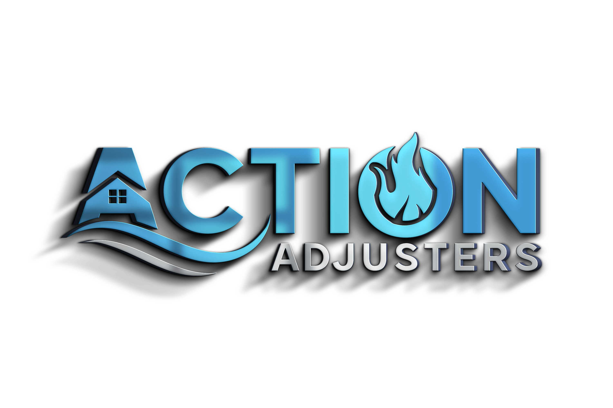

Fire & Smoke Damage
We document structural damage, smoke residue, contents loss, and rebuild costs so nothing material gets overlooked.
Start a fire claim
Get Help NowPublic adjusters for property owners
When disaster strikes, Action Adjusters helps document the damage, manage your claim, and pursue the settlement you deserve.
Restoring more than property
Action Adjusters represents homeowners, businesses, and commercial property owners through the insurance claim process. We help identify covered damage, prepare loss documentation, review policy details, communicate with the insurance company, and push toward a fair result.
From sudden water loss to storm, roof, fire, smoke, mold, delayed, denied, or underpaid claims, our role is simple: protect your time, protect your claim, and keep your recovery moving.
Our services
We document structural damage, smoke residue, contents loss, and rebuild costs so nothing material gets overlooked.
Start a fire claimFast help for burst pipes, appliance leaks, sewer backup, and water losses that can spread behind walls and flooring.
Review water damageWe assess wind, hail, roof, siding, tree, and exterior losses with clear evidence and repair-based estimating.
Get storm helpIf the carrier's offer feels too low or your claim was delayed or denied, we can review the file and build a stronger path forward.
Dispute a claimThe Action process
We personally review the property, document visible and hidden damage, and identify the scope of the loss.
We estimate repair costs, review coverage, organize evidence, and prepare the claim for negotiation.
We communicate with the insurance company, challenge gaps, and advocate for a settlement that reflects the real damage.
We help move the claim toward resolution so you can rebuild, reopen, relocate, or restore your property with confidence.
No matter the damage
Property losses are stressful enough. Action Adjusters brings construction knowledge, policy review, and negotiation support to the claim so you can focus on what comes next.
Local experts. Personal service. Proven effort.
Insurance claims require more than forms and photos. They require a strategy, clean documentation, careful estimating, and steady follow-up. That is where Action Adjusters steps in.
Get help now
Tell us what happened and an Action Adjusters representative can follow up about your property damage claim.